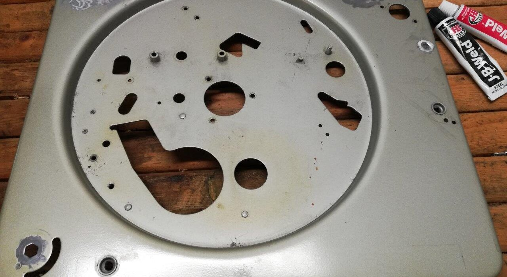

Early in 2019, I decided that I was going to make a serious effort to restore the changer in my grandmother’s old suitcase record player.
After reading about the growing community of people restoring and modifying Lenco and Garrard idler-drive turntables I thought, why not a Magnavox? The design technology between those turntables is essentially the same: A powerful motor drives a rubber “idler” which turns the platter. The only difference with the Magnavox was that it was an automatic changer rather than a manual turntable.
But I didn’t want to restore the record changer to be a changer. I don’t really like record changers. They handle the records somewhat clumsily, and can cause damage. More importantly, most record changers only played one side of a record before dropping the next one. I like to listen to an album start to finish.
Following the design philosophy of my tube amp, I decided to strip the Micromatic changer of all but the necessary elements; I decided to turn the record changer into a totally manual deck.
I stripped the steel deck of the changer of every piece. Yes, I disassembled the thing down to the last spring and nut. Looking back, I wish I had been more methodical, as it took me a lot of time to figure out which pieces I needed to restore some of the functions I wanted to retain (e.g. the speed change mechanism).
I used JB Weld to epoxy mild steel sheets to the underside of the deck over any holes I wanted to disappear. The cubby for the 45 adapter, the hole for the stabilizer arm, and some of the adjustment screw holes needed to be filled. Any epoxy would work, but JB Weld really is an excellent product and comes in small, easy to mix quantities. I also like that it has a longer working time.
After the epoxy set, I beveled the edges of the holes with a Dremel and prepped for Bondo body filler. I treated the metal the same as the body of a car, with filler, primer and paint.
The paint I chose was something close to the original: Krylon Fusion metallic silver. Krylon paint has never let me down as far as spray pattern and substrate adhesion goes. Even though the Krylon has produced decent results, if I had this to do again, I would take the deck to a body shop and have it professionally painted. Rattle-can paint just doesn’t dry hard enough (at least not for a very long time). In addition, I had to lay down several coats to correct dust and drips (my own fault) so the paint was super thick. In any case it turned out okay.
Preparing the deck – sanding – filling holes – sanding – priming – sanding – painting – sanding – painting again; this was probably the most frustrating part of the project. I’d highly recommend doing some prep work and taking the piece to a paint shop who can lay down two coats of automotive grade paint and call it a day. It would be well worth the investment, since I probably spent $50 in materials for the paint work alone.
Tags: Magnavox, Record, Turntable